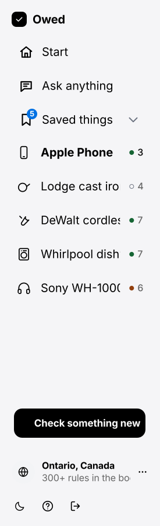
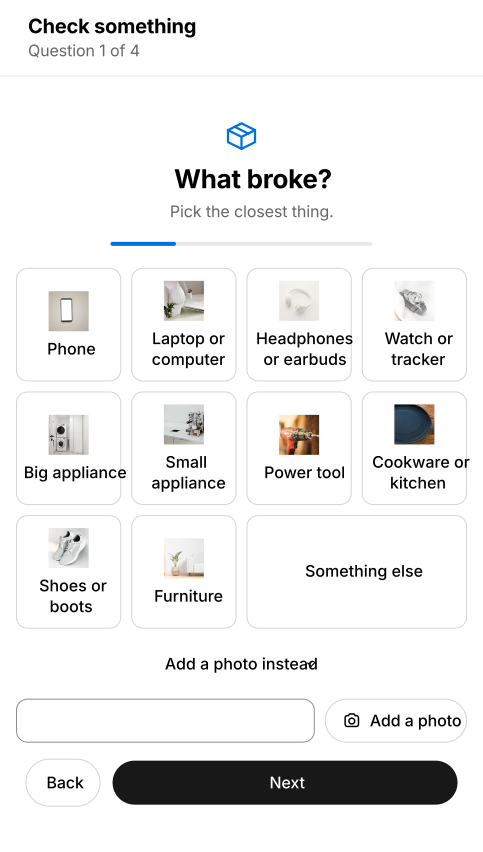
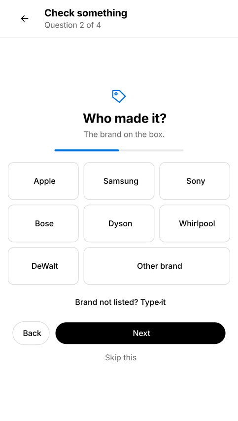
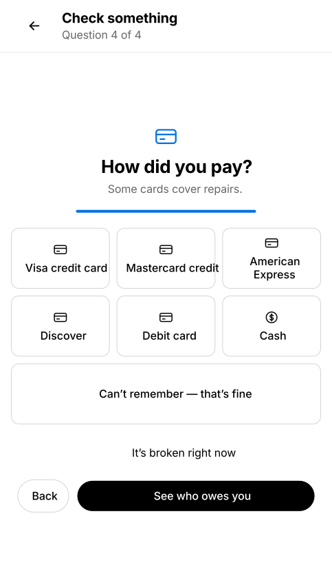
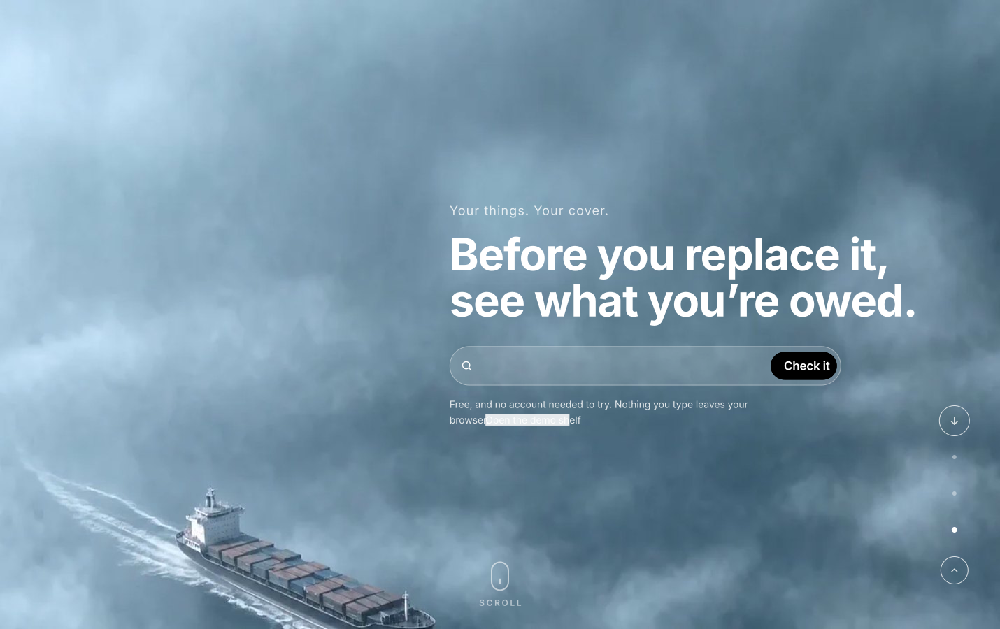
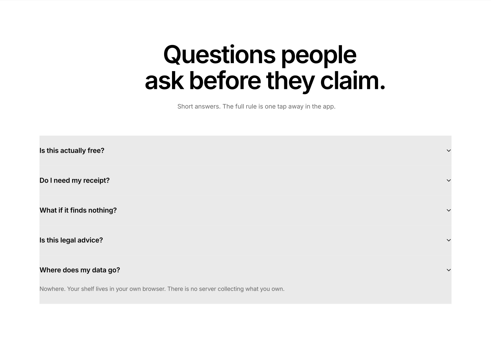

<!doctype html><meta charset="utf-8"><title>vector preview</title>
<!-- Serve the site and open /vectors/preview.html. The checkerboard is there to
     prove the point: every file is transparent, so nothing carries a white card
     into After Effects. Each  loads its own document, so clip-path ids in
     one file cannot collide with another's. -->
<style>
body{margin:0;background:#333;display:flex;flex-direction:column;gap:18px;padding:18px;font:13px system-ui}
figcaption{color:#fff;font-weight:600;padding:3px 0}
.row{display:flex;gap:14px;align-items:flex-start;flex-wrap:wrap}
img{display:block;max-width:100%;
  background-image:linear-gradient(45deg,#555 25%,transparent 25%,transparent 75%,#555 75%),
                   linear-gradient(45deg,#555 25%,transparent 25%,transparent 75%,#555 75%);
  background-size:16px 16px;background-position:0 0,8px 8px}
.parts img{height:56px;width:auto}
</style>
<figure><figcaption>app — sidebar · Q1 · Q2 · Q4</figcaption><div class="row">
</div></figure>
<figure><figcaption>app — side panel · script document · ask</figcaption><div class="row">
</div></figure>
<figure><figcaption>landing — film chapter 3 · marquee</figcaption><div class="row">
</div></figure>
<figure><figcaption>the FAQ, opened</figcaption><div class="row"></div></figure>
<figure><figcaption>parts — question 1, one file each</figcaption><div class="row parts">


</div></figure>
